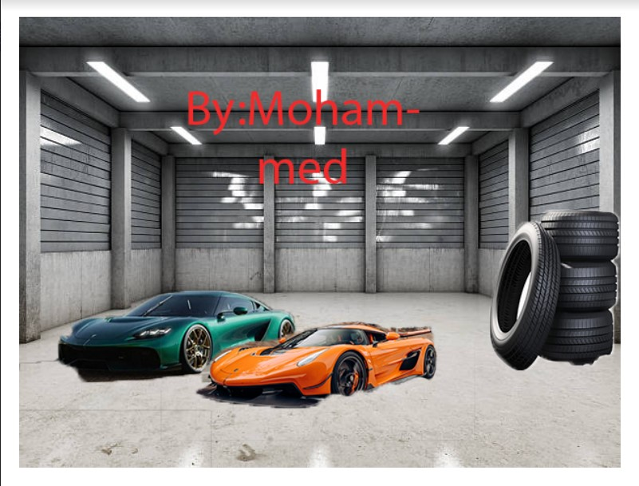
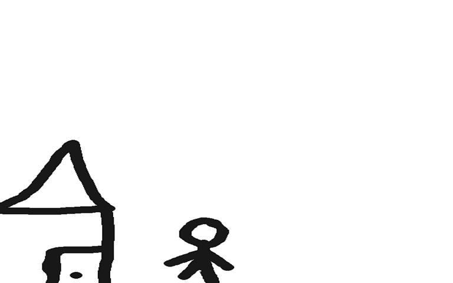
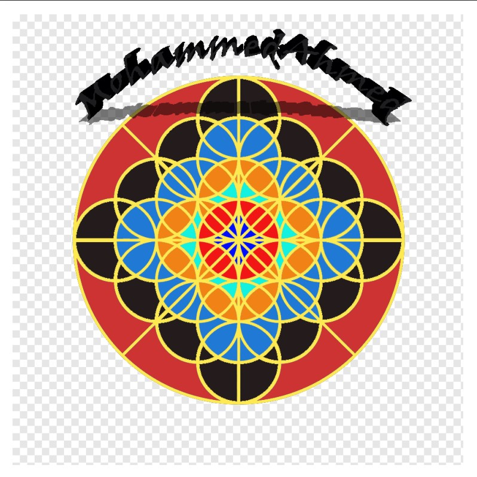

My Third project in photoshop by myself. This was a Moderatre Project and took some time. This project is supposed to bring viewers to join the IT orginazation, these viewers could be kids,teens, or adults.
I created this project using multiplpe Photoshop Tools and Tricks, such as Filter, Contrast, Desolve, & etc;
Postcard
My second project in photoshop by myself. This was a Moderatre Project and took some time. This project is a postcard which you might send to a famliy or friends. This specific viewers are Muslims during there holy month which is Ramadan as shown in the project.
I created this project using multiplpe Photoshop Tools and Tricks, such as Filter, Contrast, Desolve, Border, Healing Brush, Lasso tool, Diffirent Frames Combined& etc;
Collage

My First project in photoshop bt myself. This was a Easy Project and took Little time. This project is supposed to be practice for upcoming harder projects. This helped me understand the basics of Photoshop and tips & tricks.
I created this project using multiplpe Photoshop Tools and Tricks, such as Filter, Contrast, Desolve, healign brush, Magnetic lasso, Text, Gradient, Clone Stamp & etc;
Gif

My fifth project in photoshop by myself and a Partner. This was a Hard Project and took some time. This project helped us understand how advanced photoshop is used.We had to make frames and put them one after another by editing each frame to make it look consistent and professional.There is more rthan 30 frames in this project.
We created this project using multiplpe Photoshop Tools and Tricks, such as Filter, Contrast, Desolve, Frames, Constant Editing & etc;
activity Project

This was only a activityt which helped us use differnt tools to color diffirent parts in the design and was decently hard beacuase we had to figure it out by our self how to use the tools and color the image.